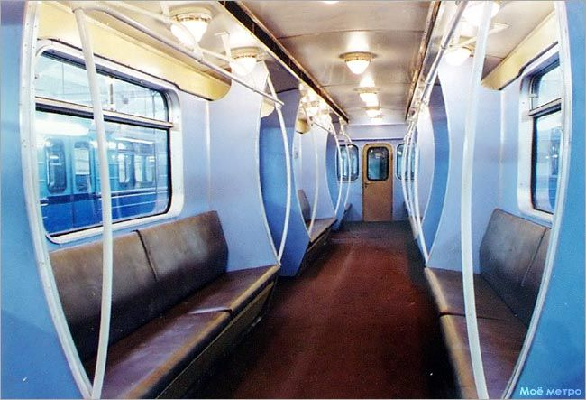

ЕжТК — опытная модернизация вагонов Еж3 и Еж6
ЕжТК — это первый вариант модернизации вагонов на Таганско-Краснопресненской линии (ТКЛ), проведённой в конце 1990-х годов на московском заводе по ремонту электроподвижного состава (ныне — ЗАО «ЗРЭПС»).
Всего было модернизировано три вагона: №№ 5696, 5923 (тип Еж3) и 5582 (тип Еж6). В вагоне 5582 был также модернизирован салон. Из-за высокой стоимости такой модернизации от неё отказались.
История ЕжТК
Составность: 5696 (Еж3) — 5582 (Еж6) — 5923 (Еж3)
Опытная модернизация на ЗРЭПС
На московском заводе по ремонту электроподвижного состава (ныне — ЗАО «ЗРЭПС») проведена опытная модернизация состава из двух вагонов типа Еж3 (№5696, 5923) и одного Еж6 (№5582).
Заменено контакторное оборудование на электрооборудование со ступенчатым реостатным пуском. Напряжение во внутренней сети уменьшено до 80 В (вместо 750 В). На головных вагонах 5696 и 5923 установлены новые пульты управления типа ПМ-04.
Испытания
Опытные вагоны, получившие обозначение типа ЕжТК, прошли испытания на ЗРЭПС. После этого специалисты ВНИИЖТ приступили к ходовым испытаниям вагонов на линии.
К концу 1999 года пробег экспериментальных вагонов достиг 60 000 километров.
Отказ от проекта
В целом испытания метровагонов ЕжТК были признаны удачными, однако стоимость их модернизации оказалась довольно высокой. Поэтому в 2001–2002 годах был разработан новый проект модернизации метровагонов типов Еж3 и Ем-508Т, который и был принят в качестве основного.
КВР/модернизация (смена модели)
Проведён КВР/модернизация со сменой модели. Опытная модернизация «ЕжТК» завершена.
Пассажирская эксплуатация (5582)
Вагон 5582 начал работу как пассажирский. Эксплуатировался до мая 2020 года.
Утилизация
Большинство вагонов были утилизированы в сентябре 2020 года.
Технические характеристики
| Параметр | Значение |
|---|---|
| Тип | ЕжТК (опытная модернизация) |
| Базовые типы | Еж3 (5696, 5923) + Еж6 (5582) |
| Год модернизации | 1997 (январь) |
| Завод | ЗРЭПС (Московский завод по ремонту электроподвижного состава) |
| Количество вагонов | 3 |
| Составность | 5696 (Еж3) — 5582 (Еж6) — 5923 (Еж3) |
| Напряжение внутренней сети | 80 В (вместо 750 В) |
| Пульты управления | ПМ-04 (на 5696, 5923) |
| Пробег к 1999 году | 60 000 км |
| Испытания | ЗРЭПС + ВНИИЖТ (ходовые на линии) |
| Депо приписки | ТЧ-11 «Выхино» |
| Дальнейшая судьба | КВР/смена модели (июнь 2010) |
Состав по вагонам
Вагон 5696
Тип: Еж3
Роль: Головной
Особенность: Установлен новый пульт управления ПМ-04
Судьба: Утилизирован (сентябрь 2020)
Вагон 5582
Тип: Еж6
Построен: 12.1973
Роль: Промежуточный
Особенность: Модернизирован салон. С 2011 — пассажирский
Судьба: Утилизирован (сентябрь 2020)
Вагон 5923
Тип: Еж3
Роль: Головной
Особенность: Установлен новый пульт управления ПМ-04
Судьба: Ожидает утилизации (депо Митино)
Судьба вагонов
Вагон 5696
Утилизирован
В сентябре 2020 года
Вагон 5582
Утилизирован
В сентябре 2020 года
Вагон 5923
Ожидает утилизации
Находится в депо Митино
Исключением является вагон 5923, он ожидает утилизации в Митино.
Хотелось бы сохранить его, вернуть вид салона и выставить его в музей. Это единственный шанс сохранить память об уникальной модернизации.
Уникальный салон ЕжТК
Особенности интерьера
- Современный на тот момент дизайн
- Улучшенное освещение
- Комфортабельные сидения
- Отделка, отличавшаяся от стандартных Еж6
Мнение
«Как по мне, у этих вагонов один из самых красивых салонов от Е-образных вагонов».
Уникальный дизайн выделял этот состав среди остальных служебных поездов.
Фотогалерея

📸 Моё метро
Нажмите на фото для увеличения
«ЕжТК — пример того, как можно было улучшить уже существующие вагоны, создав уникальный и комфортабельный салон. Жаль, что от этой модернизации почти ничего не осталось».